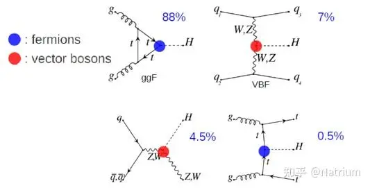

希格斯只有125GeV, 为什么需要TeV级别的对撞机才能发现？
原问题首发于知乎。
希格斯粒子只有GeV，为什么在能做到TeV的时候才发现？ - Isaac Wang的回答 - 知乎 问题三年了，恕我直言，现有答案大部分都有可取之处，但是没有很全面的。这是个很好的问题，牵扯到对撞机的设计逻辑和粒子产生过程，很值得回答一下。
要讨论究竟需要多高能量的对撞机，首先要讨论我们想要哪种Higgs的产生过程。而人类目前能用来制造对撞机的束流粒子只有电子和质子（重核不算）。所以我们需要看一下两种对撞机分别有什么优劣势。
先看电子对撞机。如果按照问题的思路，能否在能量勉强到达Higgs质量的时候就能产生Higgs?理论上可以。但是
的过程在质心系中分析不难发现，由于质心系总初始动量为0，则产生的higgs动量也为0。由能量守恒可知，此时Higgs的质量必须严格等于初始能量，差一丝都不行（有偏差就得有其他的粒子带走能量动量）。这在实验上是不可能实现的，尤其是Higgs尚未发现的时候。即便允许有伴生粒子产生，如果能量仅仅略高于Higgs的质量，产生Higgs的散射截面也会非常小（受到相空间的限制），很难真的在实验上发现。
但有一点是可以肯定的，那就是如果用电子对撞机制造Higgs，需要的能量必然不至于要到TeV的数量级。二十多年前的LEP就已经把Higgs的质量下限给到了114.4GeV1，距离最后真正的Higgs质量已经只差一点点了。当时LEP的质心系能量不过206GeV而已。现在提出的CEPC的方案，目标是产生海量的Higgs从而进行更精确的测量，质心系能量也就是240GeV。可见，如果是用电子进行对撞，其实不需要那么高的能量，也可以产生很多Higgs，只不过能量下限不可能卡在Higgs质量附近，还是要高一些，差不多要2倍左右，才能保证一个比较大的散射截面。
这里的另一个考虑是测量方式。电子对撞机的特点是初始状态完全确定。对于两个粒子的末态, 例如 的过程，只要能测出 的能量动量，根据守恒定律即可立即知道 的特点。这种测量方式叫recoil，优势是不依赖于目标粒子(这里是Higgs)的衰变模式。但相应的，要测量 ，就得要求
的动量比较高，否则探测器检测不到。因此碰撞总能量必然要高于Higgs的质量，起码要留足空间给另外的粒子。可以做recoil是电子对撞机相对强子对撞机的一大优势。例如在对extra scalar的搜寻中，在不少参数空间下，LEP依然比最新的LHC有更高的精确度，哪怕已经过了二三十年。
再反过来看强子对撞机。这里借用一下 知乎用户@Natrium 的图。

图里是强子对撞机上产生Higgs的主要途径，由图可知初态粒子是胶子或者夸克，而不是质子。强子对撞机和电子对撞机最大的不同是质子不是点粒子。质子是复合粒子，里面有夸克和胶子。对撞时，是里面具体的成分粒子发生碰撞，其余的粒子很大概率没有发生碰撞，就直接走掉了。这部分没有碰撞的叫做beam remnant。这个remnant才是强子对撞机上最大的能量损失。
以上图中左上角过程为例。这是LHC上产生Higgs的主要途径，叫做gluon fusion。此过程是初态两个质子分别贡献一个胶子进行碰撞，直接产生Higgs。因为胶子的动量不是一个定值而是概率分布（对于给定的质子动量，其组成成分的粒子动量遵循一个概率分布，叫做parton distribution function, PDF)，所以总可以有胶子动量刚好可以产生一个Higgs而不附带其他产物。这个过程本身不一定有伴生粒子（主要取决于gluon从哪来。如果直接来自于质子，则没有伴生粒子。如果是两个质子分别贡献夸克，夸克再产生t-channel的虚拟胶子然后再fusion，则有伴生粒子）。但无论那种情况，最大的能量损失都是因为巨大的质子能量中只有具体去碰撞的那一个成分才参与higgs的产生，其余都浪费掉了。
另一个重要的问题是观测。由上文所述，参与碰撞的夸克或者胶子的初始动量并不确定，因此我们无法通过recoil的方式去测量higgs，只能直接测量higgs本身的衰变产物。这就要求产生的Higgs拥有很高的动量，方便探测器去捕捉。这样对能量的要求就又上了一个台阶。同样，由于质子是复合粒子且参与强相互作用，强子对撞机上能产生的过程过于复杂，有大量的已知标准模型的其他过程可能和Higgs有相同的末态，这部分叫做背景。如果higgs的动量低，很容易淹没在大量的背景中，因此我们必须提高Higgs的动量，才能让他脱颖而出，我们才能发现他。
综上我们已经讨论了分别电子和强子对撞机为什么需要比较高的能量才能产生并捕捉Higgs。电子对撞机主要是为了伴生粒子，而且并不需要真的把对撞能量提高到TeV。强子对撞机是因为beam remnant的能量损失，以及可能的伴生粒子，以及为了探测和排除背景的需要，我们需要把能量提的很高，达到TeV的数量级。
那么下一个问题就是，既然电子对撞机的能量要求这么低，测量又方便，为什么选择建强子对撞机？
答案是，电子对撞机提升能量太tm难了！
LEP距离Higgs就差临门一脚了，怎么不提升能量了，是不想吗？人家真尽力了，条件就在那里，没法提了。
主要原因就是同步辐射。带电粒子被加速的时候，通过电磁场同步辐射损失能量。这个损失和质量点四次方成反比！而电子的质量只有质子的1836分之一，那么毫无疑问，电子能量每提升一点点都要付出巨大的努力。这也就是为什么CEPC的设计大小比LEP大那么多，质心系能量才从206GeV提升到240GeV的理由。
回到LHC设计的时候，人们当初并不知道Higgs的质量究竟是多少。为了发现Higgs，必须冲着对撞机领域当时能造出的最高能量去。出于这个考虑，同步辐射损失更少的质子对撞机就成为了首选。最终结果我们也都看到了，LHC不负众望，不但发现了Higgs，还在过去十几年里附带排除了一大批假想的理论模型。
总结起来，质子vs电子的争论，无外乎想要更高的能量还是更干净的背景。从发现更高能量粒子的角度讲，质子对撞机大部分时候比电子划算。beam remnant的能量损失远远比不上同步辐射对加速的负面影响。而为了精确测量一些已经发现的粒子，或者探索一些质量不太高但相互作用极端微弱的粒子，背景更干净的电子对撞机或者其他类型的加速器实验(比如muon beam fixed target)会是更好的选择。而一旦选择了质子对撞机去发现新粒子，那么由于之前讨论过的各类能量损失，设计能量就必须远远高于目标粒子的质量。这也就是为什么发现125GeV的Higgs需要用到几个TeV的质子对撞机的理由。